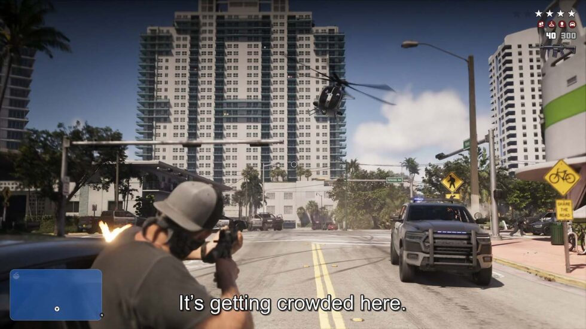

Theo kịp câu chuyện.
Đọc phụ đề Việt hoặc bật giọng đọc khi chơi.
CONSOLE TRANSLATOR: DỊCH GAME
Hiểu hội thoại. Biết nhiệm vụ cần làm.
Đọc vật phẩm mà không phải dừng game để tra dịch.

Đọc phụ đề Việt hoặc bật giọng đọc khi chơi.
Chọn vùng chữ để dịch nhiệm vụ, vật phẩm và lựa chọn.
Chọn game có trong kho để dùng tên, thuật ngữ và văn phong riêng.
Trả lời hai câu hỏi, xem ngay bản cần cài.
CHƠI TRÊN MÀN HÌNH LỚN
Điện thoại hoặc Mac chạy dịch, TV hiển thị phụ đề.
Hỗ trợ Android TV, LG và Samsung tương thích.

ĐÃ CÀI APP?
DANH SÁCH GAME
Tìm game → Sao chép tên → Dán vào “Đang chơi game” trong app.
Đang tải danh sách game…
GIẢI ĐÁP NHANH
Bấm vào câu hỏi để xem câu trả lời.
Một điện thoại hoặc Mac để chạy app, máy chơi game đã bật Chơi từ xa và các thiết bị cùng mạng Wi-Fi khi ghép lần đầu. Nếu giữ tay cầm chơi trực tiếp trên TV, hãy ghép Chơi từ xa bằng tài khoản phụ để tránh ngắt tay cầm của tài khoản chính. Hướng dẫn có hình chỉ rõ từng bước.
Chưa. App TV chỉ nhận và hiển thị phụ đề. Điện thoại hoặc Mac vẫn phải nhận hình game và chạy dịch trong lúc chơi. Máy chơi game vẫn nối HDMI vào TV như bình thường.
Premium là gói theo tuần, tháng hoặc năm, dùng Dịch AI. PRO mua một lần, mở phụ đề trên TV và các tính năng PRO, không bao gồm Dịch AI. Nếu muốn vừa dùng Dịch AI vừa đưa chữ lên TV trên iPhone, cần cả hai. Xem quyền lợi và giá hiện tại trong app.
Kiểm tra app đã có hình game, khung quét trùm đúng chữ gốc và đã bấm bắt đầu dịch. Trên Android, chọn chia sẻ đúng app đang có hình game. Nếu vẫn lỗi, gửi ảnh màn hình báo lỗi, loại điện thoại và bước đang làm vào nhóm hỗ trợ. Với lỗi TV, gửi thêm hãng và mã model TV.
Không. App đọc chữ trên hình game rồi dịch tự động. Không sửa file game. Chất lượng có thể khác bản dịch được biên tập thủ công.
Kho này liệt kê game đã có hướng dẫn dịch riêng. Bạn vẫn có thể dùng bộ dịch thông thường cho game khác, hoặc gửi yêu cầu thêm game qua bot.
Tùy hệ điều hành, đời TV và quyền hiển thị. Mở hướng dẫn đúng hãng để kiểm tra trước khi chọn gói có tính năng TV.
Có tính năng miễn phí và tính năng cần gói trả phí. Quyền sử dụng khác nhau theo nền tảng; xem trong app và hướng dẫn của bản bạn cài.